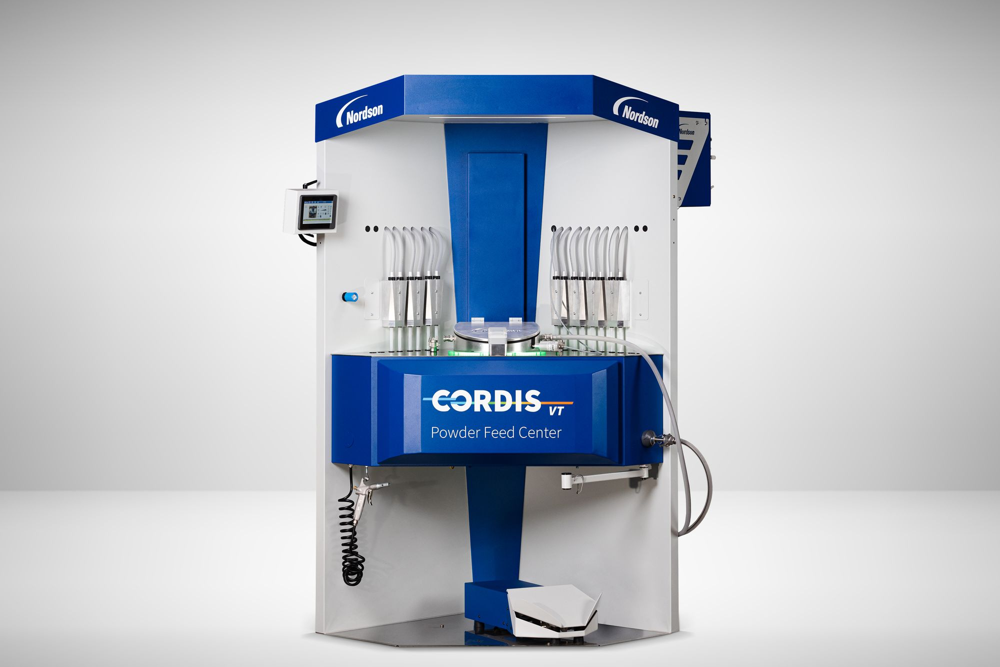
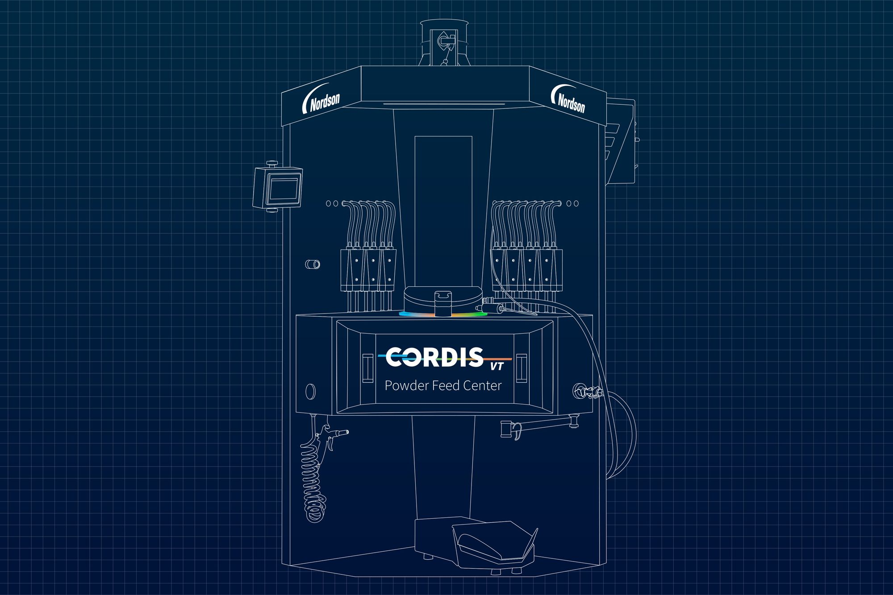
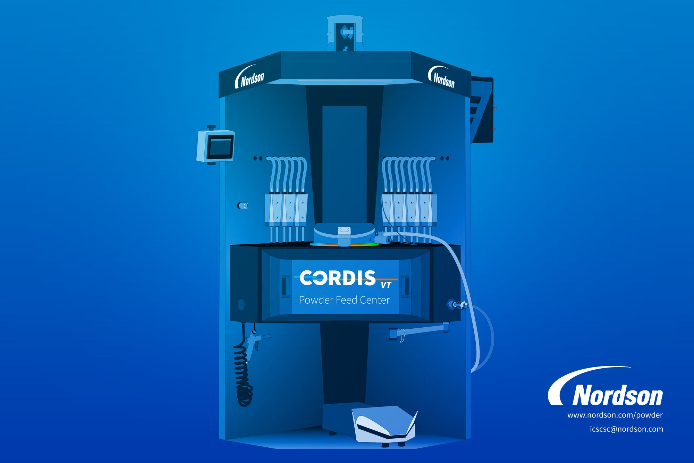

1
Ascend Visualization Studio
A canonical library of modular creative assets, and the tools to put them to work across teams, channels, and markets.


Structure. I worked with the engineers on the Next Generation Feed Center — the programme that became the Cordis.
Expression. I made the final assets and carried them through production, publication, and printing.
Nordson makes complex engineered products for markets around the world.
A cross-division product-development programme brought the practice together; Cordis was the product that emerged from it.
The Studio

Nordson needs a lot of content, in a lot of formats, for a lot of purposes, and that content has to remain accurate and usable as it moves through the organization.
I built Ascend Visualization Studio around a canonical library of modular creative assets: product imagery, illustration, layouts, templates, and production-ready components that can be assembled for different applications without recreating the underlying work each time.
The objective is straightforward: do the operational work ahead of time, make it durable, and leave more time for the work itself — creative judgment, careful production, and the precision required to represent complex engineered products correctly.
{kind=link}